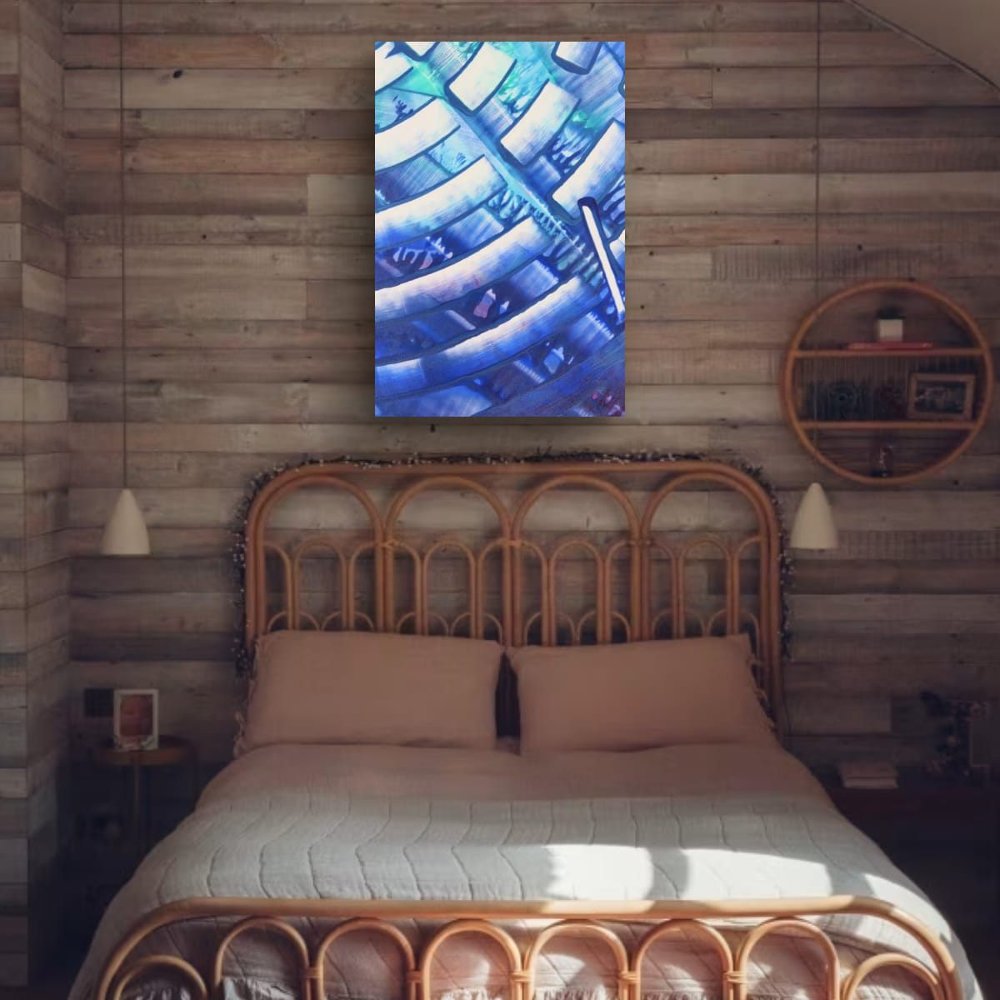
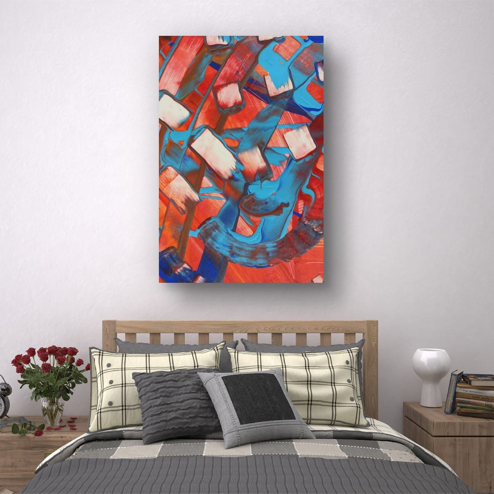
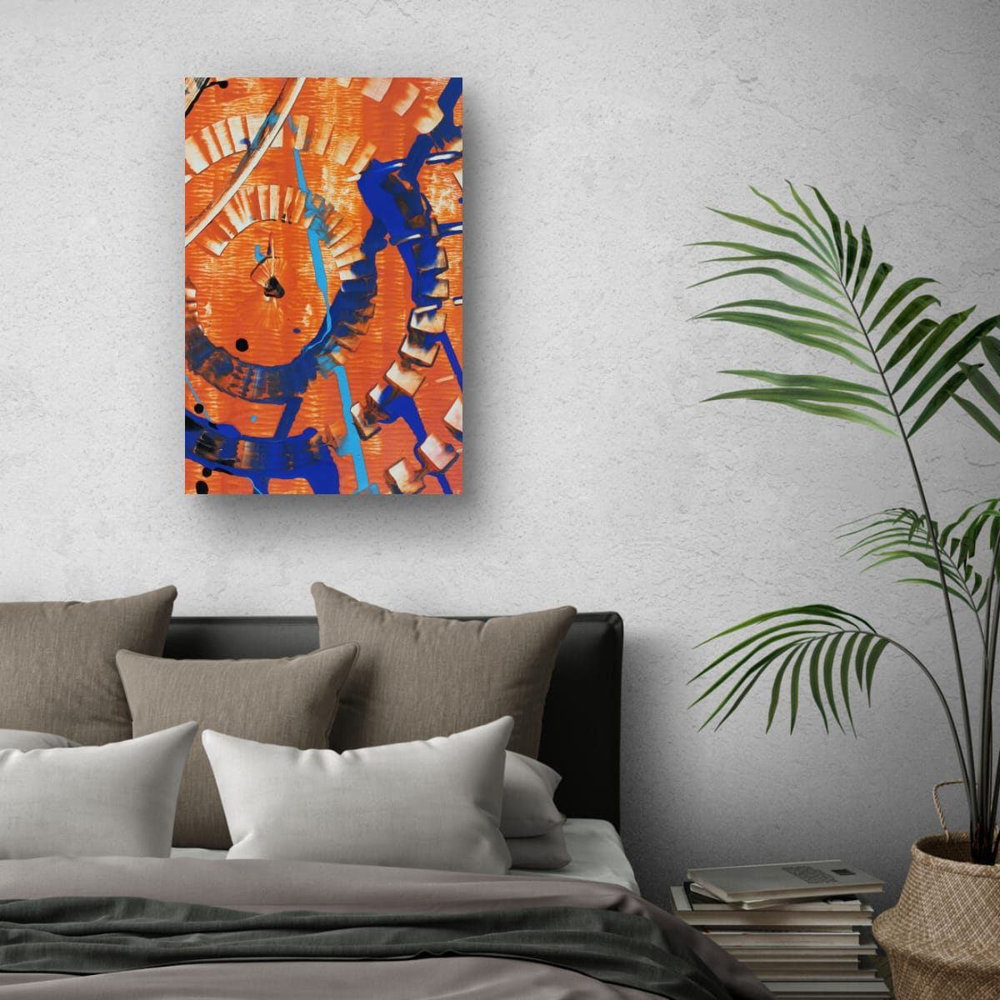

The short answer
Choose art that is about two thirds of the width of the bed, and never less than half. Hang it so the bottom edge sits 8 to 12 inches (20 to 30 cm) above the top of the headboard. Center it on the bed, not on the wall.
Why the bed sets the size
A bed is the largest piece of furniture in most bedrooms, and it anchors the wall behind it. Art above it works the same way as art above a sofa: when it is close to two thirds of the bed's width, the bed and the art read as one composition. Much smaller, and the art looks like a postage stamp above a big white rectangle. As wide as the bed or wider, and the wall feels heavy right where you want it to feel restful.
If your headboard is noticeably wider than the mattress, measure the headboard instead. It is what the eye actually sees.
Quick size table
Standard mattress widths in the US, with the art width I would start from. As always, these are totals, frames and gaps included.
| Bed | Mattress width | Art width (2/3 to 3/4) |
|---|---|---|
| Twin | 38″ (97 cm) | 25–28″ (64–72 cm) |
| Full | 54″ (137 cm) | 36–40″ (91–102 cm) |
| Queen | 60″ (152 cm) | 40–45″ (102–114 cm) |
| King | 76″ (193 cm) | 50–57″ (127–145 cm) |
How high to hang it
Measure from the top of the headboard, not from the floor. Eight to twelve inches is the comfortable range: close enough that the art clearly belongs to the bed, high enough that nobody touches it when sitting up to read. Around 10 inches is a good default.
If your bed has no headboard, imagine one. Keep the bottom of the frame high enough that your head clears it easily when you sit up against the wall, and keep the art centered on the bed.

One piece, a pair, or one over each nightstand
All my prints can hang vertically or horizontally, which gives you real freedom above a bed. These are the three layouts I come back to.
One piece over the bed
Usually a horizontal piece, centered on the bed. It is the calmest choice, and the right one for a simple, uncluttered bedroom.
A pair over the bed
Two vertical prints side by side, 2 to 3 inches (5 to 8 cm) apart, measured together as one block. Pairs feel balanced, which suits a bedroom, and two details from the same painting give you two different views of the same colors.
One over each nightstand
A classic layout for a symmetrical room, especially when the wall above the bed is taken by a tall headboard, a window or shelves. Center each piece on its nightstand, hang both at the same height, and keep the two pieces the same size. Smaller vertical prints work well here.

Safety first
Art above a bed hangs right over someone's head, so I treat it differently from art anywhere else:
- Use proper hardware rated for the weight, and anchors or studs, not a single small nail.
- Prefer light formats over the bed: unglazed prints, canvas or lightweight metal rather than large frames with heavy glass.
- Secure the bottom corners with removable adhesive strips or bumpers so the frame cannot swing.
- If you live in an earthquake-prone area, consider keeping heavy or glazed pieces off the wall above the bed altogether.
Colors for a bedroom
Most people want a bedroom to feel calm, and color plays a big part in that. Cool blues and greens tend to feel restful. Warm reds and oranges feel cozy in small doses and energetic in large ones. If you love warm colors, a strong piece against quiet bedding works beautifully. If you want the room to feel calmer, choose a cooler palette or a detail where the warm color is only an accent. My guide to warm and cool art goes deeper into this.

Mistakes to avoid
- Art that is too small for the bed. Remember the minimum: never less than half the bed width.
- Hanging it too high. More than about a foot above the headboard and it floats away from the bed.
- Heavy glass over the pillows. Choose lighter formats and secure hardware.
- Off-center art. Center on the bed, even if the bed is not centered on the wall.
Checklist
- Measure the bed or headboard width, whichever is wider.
- Aim for 2/3 of that width, never less than half.
- Choose a layout: one piece, a pair, or one over each nightstand.
- Hang 8–12″ above the headboard, centered on the bed.
- Use rated hardware and keep heavy glass away from the pillows.
These are general guidelines, not strict rules. Every room is different, and a few inches either way will not ruin a good wall. Room scenes are digital mockups; the artworks are details of real hand-painted paintings. Prints are offered in several sizes and formats on the shops linked from each artwork page.